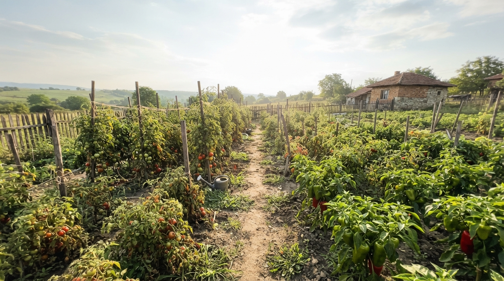

Успешно отглеждане на хрупкави и сочни краставици
Краставиците са топлолюбиви и влаголюбиви растения, които изискват редовни грижи, за да дават обилна реколта през целия лятен сезон без горчив вкус в плодчетата.

1. Нужда от топлинни условия и почва
Семената или разсадът не трябва да се засаждат в студена почва. Оптималната температура за развитие е над 20°C. Почвата трябва да е изключително богата на хумус и лесна за поддържане с висока влажност.
2. Редовно поливане с хладка вода
Краставиците се състоят основно от вода, което означава, че липсата на влага води до горчив вкус и деформирани плодове. Поливайте винаги с престояла, хладка вода в корена.